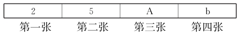

第一部分 演绎逻辑
1.有些阔叶树是常绿植物，因此阔叶树都不生长在寒带地区。
以下哪项如果为真，最能反驳上述结论？
A.有些阔叶树不生长在寒带地区。
B.常绿植物都生长在寒带地区。
C.寒带的某些地区不生长常绿植物。
D.常绿植物都不生长在寒带地区。
E.常绿植物不都是阔叶树。
2.随着心脏病成为人类的第一杀手，人体血液中的胆固醇含量越来越引起人们的重视。一个人血液中的胆固醇含量越高，患致命的心脏病的风险也就越大。至少有三个因素会影响人的血液中胆固醇的含量，它们是抽烟、饮酒和运动。
如果上述断定为真，则以下哪项一定为真？
Ⅰ.某些生活方式的改变，会影响一个人患心脏病的风险。
Ⅱ.如果一个人的血液中的胆固醇含量不高，那么他患致命的心脏病的风险也不高。
Ⅲ.血液中的胆固醇高含量是造成当今人类死亡的主要原因。
A.只有Ⅰ。
B.只有Ⅱ。
C.只有Ⅲ。
D.只有Ⅰ和Ⅲ。
E.Ⅰ、Ⅱ和Ⅲ。
3.用地面雷达所拍下的流星的最近距离为220万英里，即流星托德地斯被拍下的最近距离。最近的流星照片是格斯泊拉，在仅仅1万英里远的距离被拍摄到。
下列哪一项可以从上面语句中正确推导出来？
A.托德地斯比格斯泊拉更可能与地球相撞。
B.托德地斯，不像格斯泊拉，仅仅最近被发现。
C.另一流星阿斯特地斯仅仅可以通过使用地面雷达拍摄下来。
D.基于地面的雷达不能拍摄距地球220万英里以外的物体。
E.格斯泊拉的照片不是由基于地面的雷达拍摄下来的。
4.家用电炉有三个部件：加热器、恒温器和安全器。加热器只有两个设置：开和关。在正常工作的情况下，如果将加热器设置为开，则电炉运作加热功能;设置为关，则停止这一功能。当温度达到恒温器的温度旋钮所设定的读数时，加热器自动关闭。电炉中只有恒温器具有这一功能。只要温度一超出温度旋钮的最高读数，安全器自动关闭加热器。同样，电炉中只有安全器具有这一功能。当电炉启动时，三个部件同时工作，除非发生故障。
以上判定最能支持以下哪项结论？
A.一个电炉，如果它的恒温器和安全器都出现了故障，则它的温度一定会超出温度旋钮的最高读数。
B.一个电炉，如果其加热的温度超出了温度旋钮的设定读数但加热器并没有关闭，则安全器出现了故障。
C.一个电炉，如果加热器自动关闭，则恒温器一定工作正常。
D.一个电炉，如果其加热温度超出了温度旋钮的最高读数，则它的恒温器和安全器一定都出现了故障。
E.一个电炉，如果其加热的温度超出了温度旋钮的最高读数，则它的恒温器和安全器不一定都出现了故障，但至少其中某一个出现了故障。
5.专业人士预测：如果粮食价格保持稳定，那么蔬菜价格也保持稳定;如果食用油价格不稳，那么蔬菜价格也将出现波动。老李由此断定：粮食价格保持稳定，但是肉类食品价格将上涨。
根据上述专业人士的预测，以下哪项为真，最能对老李的观点提出质疑？
A.如果食用油价格出现波动，那么肉类食品价格不会上涨。
B.如果食用油价格稳定，那么肉类食品价格不会上涨。
C.如果肉类食品价格不上涨，那么食用油价格将会上涨。
D.如果食用油价格稳定，那么肉类食品价格将会上涨。
E.只有食用油价格稳定，那么肉类食品价格才不会上涨。
6.所有物质实体都是可见的，而任何可见的东西都没有神秘感。因此，精神世界不是物质实体。
以下哪项最可能是上述论证所假设的？
A.精神世界是不可见的。
B.有神秘感的东西都是不可见的。
C.可见的东西都是物质实体。
D.精神世界有时也是可见的。
E.精神世界具有神秘感。
7.除非有两种以上稀有品种的水果，否则含香蕉的水果沙拉通常只是一道乏味的菜。这盆水果沙拉里面有香蕉，并且其中唯一奇特的水果是石榴，所以，这道菜可能十分乏味。
以下哪项推理的结构与题干的推理最为类似？
A.通常40%的鹿会在冬季死亡，除非某个冬季异常温暖。在这个冬季，死去的鹿与往常一样，是40%，所以我认为这个冬季并非异常温暖。
B.除非拳王赛的卫冕者被收买，否则，挑战者很难击倒对方而获胜。在这次拳王赛中，卫冕者已被收买，因此，挑战者很可能击倒对方而获胜。
C.作者第一次写作的手稿通常不被出版商注意，除非他是名人。我的手稿可能不会引起出版商的注意，因为我是第一次写作，而且不是名人。
D.不会有很多人参加星期四的法庭辩论旁听，通常在审理离婚案时，参加旁听的人就非常少，而星期四开庭审理的正是离婚案。
E.死者的遗产通常要么分给仍然活着的配偶，要么分给仍然活着的子女。这个案子中没有仍然活着的配偶，因此，遗产可能分给仍然活着的子女。
8.与西药相比，中药是安全的，因为中药的成分都是天然的。
下列陈述中，除哪项外，都反驳了上面论证的假设？
A.所有天然的东西都是安全的。
B.断肠草是天然的，却能致人死命。
C.有些天然的东西是不安全的。
D.并非天然的东西都是安全的。
E.中草药是天然的，但也有毒副作用。

9.上面四张卡片，一面为阿拉伯数字，一面为英文字母，主持人断定：如果一面为奇数，则另一面为元音字母。
为验证主持人的断定，必须翻动
A.第1张和第3张。
B.第1张和第4张。
C.第2张和第3张。
D.第2张和第4张。
E.全部四张卡片。
10.有四个外表看起来没有区别的小球，它们的重量可能有所不同。取一个天平，将甲、乙归为一组，丙、丁归为另一组，分别放在天平的两边，天平是基本平衡的。将乙和丁对调一下，甲、丁一边明显地要比乙、丙一边重得多。可奇怪的是，我们在天平一边放上甲、丙，而另一边刚放上乙，还没有来得及放上丁时，天平就压向了乙一边。
请你判断，这四个球中由重到轻的顺序是什么？
A.丁、乙、甲、丙。
B.丁、乙、丙、甲。
C.乙、丙、丁、甲。
D.乙、甲、丁、丙。
E.乙、丁、甲、丙。
11.对本届奥运会所有奖牌获得者进行了尿样化验，没有发现兴奋剂使用者。
如果以上陈述为假，则以下哪项一定为真？
Ⅰ.或者有的奖牌获得者没有化检尿样，或者在奖牌获得者中发现了兴奋剂使用者。
Ⅱ.虽然有的奖牌获得者没有化检尿样，但还是发现了兴奋剂使用者。
Ⅲ.如果对所有的奖牌获得者进行了尿样化验，则一定发现了兴奋剂使用者。
A.只有Ⅰ。
B.只有Ⅱ。
C.只有Ⅲ。
D.只有Ⅰ和Ⅲ。
E.只有Ⅱ和Ⅲ。
12.一个热力站有5个阀门控制对外送蒸汽，使用这些阀门必须遵守以下操作规则：
（1）如果开启1号阀，那么必须同时打开2号阀并且关闭5号阀。
（2）如果开启2号阀或者5号阀，则要关闭4号阀。
（3）不能同时关闭3号阀和4号阀。
现在要打开1阀，同时要打开的阀门是哪两个？
A. 2号阀和4号阀。
B. 2号阀和3号阀。
C. 3号阀和5号阀。
D. 4号阀和5号阀。
E. 2号阀和5号阀。
13.在某次思维训练课上，张老师提出“尚左数”这一概念的定义：在连续排列的一组数字中，如果一个数字左边的数字都比其大（或无数字），且其右边的数字都比其小（或无数字），则称这个数字为尚左数。
根据张老师的定义，在8、9、7、6、4、5、3、2这列数字中，以下哪项包含了该列数字中所有的尚左数？
A. 4、5、7和9。
B. 2、3、6和7。
C. 3、6、7和8。
D. 5、6、7和8。
E. 2、3、6和8。
14.以下关于电脑故障的陈述中，只有一个是真的：
Ⅰ.显卡坏了。
Ⅱ.如果主板坏了，那么内存也一定出现了故障。
Ⅲ.主板或显卡坏了。
Ⅳ.主板坏了。
根据上述条件，可以推出以下哪项？
A.Ⅰ项为真，显卡坏了。
B.Ⅱ项为真。
C.Ⅲ项为真，主板或显卡坏了。
D.Ⅳ项为真，主板坏了。
E.推不出结果。
15.大嘴鲈鱼只在有鲦鱼出现的河中长有浮藻的水域里生活。漠亚河中没有大嘴鲈鱼。
从上述断定能得出以下哪项结论？
Ⅰ.鲦鱼只在长有浮藻的河中才能发现。
Ⅱ.漠亚河中既没有浮藻，又发现不了鲦鱼。
Ⅲ.如果在漠亚河中发现了鲦鱼，则其中肯定不会有浮藻。
A.只有Ⅰ。
B.只有Ⅱ。
C.只有Ⅲ。
D.只有Ⅰ和Ⅱ。
E.Ⅰ、Ⅱ和Ⅲ都不是。
16.一项研究发现：吸食过毒品（例如摇头丸）的女孩比没有这种行为的女孩患抑郁症的可能性高出2至3倍;酗酒的男孩比不喝酒的男孩患抑郁症的可能性高出5倍。另外，抑郁会使没有不良行为的孩子减少犯错误的冲动，却会让有过上述不良行为的孩子更加行为出格。
如果上述断定为真，则以下哪项一定为真？
A.行为出格的孩子容易抑郁，进而加重他们的出格行为。
B.酗酒的男孩比食用摇头丸的女孩患抑郁症的可能性高。
C.抑郁会让人失去生活的乐趣并导致行为出格。
D.没有坏习惯的孩子大多是家庭和谐快乐的。
E.患有抑郁症的孩子都伴随有不良的行为出格。
17.在微波炉清洁剂中加入漂白剂，就会释放出氯气;在浴盆清洁剂中加入漂白剂，也会释放出氯气;在排烟机清洁剂中加入漂白剂，没有释放出任何气体。现有一种未知类型的清洁剂，加入漂白剂后，没有释放出氯气。
根据上述实验，以下哪项关于这种未知类型的清洁剂的断定一定为真？
Ⅰ.它是排烟机清洁剂。
Ⅱ.它既不是微波炉清洁剂，也不是浴盆清洁剂。
Ⅲ.它要么是排烟机清洁剂，要么是微波炉清洁剂或浴盆清洁剂。
A.仅Ⅰ。
B.仅Ⅱ。
C.仅Ⅲ。
D.仅Ⅰ和Ⅱ。
E.Ⅰ、Ⅱ和Ⅲ。
18.某大学对全体新生进行了体检，没有发现乙肝患者。
如果上述陈述为假，则以下哪项一定为真？
Ⅰ.或者有的新生没有体检，或者在新生中发现了乙肝患者。
Ⅱ.虽然有的新生没有参加体检，但还是发现了乙肝患者。
Ⅲ.如果对所有的新生进行了体检，则一定发现了乙肝患者。
A.仅Ⅰ。
B.仅Ⅱ。
C.仅Ⅲ。
D.仅Ⅰ和Ⅲ。
E.仅Ⅰ和Ⅱ。
19.为防御电脑受病毒侵袭，研究人员开发了防御病毒、查杀病毒的程序，前者启动后能使程序运行免受病毒侵袭，后者启动后能迅速查杀电脑中可能存在的病毒。某台电脑上现出甲、乙、丙三种程序。已知：
（1）甲程序能查杀目前已知所有病毒;
（2）若乙程序不能防御已知的一号病毒，则丙程序也不能查杀该病毒;
（3）只有丙程序能防御已知的一号病毒，电脑才能查杀目前已知的所有病毒;
（4）只有启动甲程序，才能启动丙程序。
根据上述信息可以得出以下哪项？
A.只有启动丙程序，才能防御并查杀一号病毒。
B.只有启动乙程序，才能防御并查杀一号病毒。
C.如果启动丙程序，就能防御并查杀一号病毒。
D.如果启动了乙程序，那么不必启动丙程序也能查杀一号病毒。
E.如果启动了甲程序，那么不必启动乙程序也能查杀所有病毒。
20.根据一个心理学理论，一个人想要快乐就必须和周围的人保持亲密的关系，但是世界上伟大的画家往往是在孤独中度过了他们的大部分时光，并且没有亲密的人际关系。所以，这种心理学理论的上述结论是不成立的。
以下哪项最可能是上述论证所假设的？
A.该心理学理论是为了揭示内心体验与艺术成就的关系。
B.有亲密人际关系的人几乎没有孤独的时候。
C.孤独对于伟大的绘画艺术家来说是必需的。
D.有些著名画家有亲密的人际关系。
E.获得伟大成就的艺术家不可能不快乐。
21.李医生：除非得了癌症，否则不会接受化疗。
赵经理：不会吧!我们单位的马大姐得了癌症，但是她没有接受化疗，而且已经康复了。
赵经理把李医生的话误解为：
A.接受化疗的都是得了癌症的病人。
B.所有得了癌症的人都得接受化疗。
C.只有得了癌症才会接受化疗。
D.没得癌症的人不接受化疗。
E.有些没得癌症的病人也许会接受化疗。
22.有些被公众认为是坏的行为往往有好的效果。只有产生好的效果，一个行为才是好的行为。因此，有些被公众认为是坏的行为其实是好的行为。
以下哪项最为恰当地概括了上述推理中存在的错误？
A.不当地假设：如果a是b的必要条件，则a也是b的充分条件。
B.不当地假设：如果a不是b的必要条件，则a是b的充分条件。
C.不当地假设：如果a是b的必要条件，则a不是b的充分条件。
D.不当地假设：任何两个断定之间都存在条件关系。
E.不当地假设：任何两个断定之间都不存在条件关系。
23.在一所公寓里有一人被杀害了，在现场共有甲、乙、丙三人。已知这三人中，一个是主犯，一个是从犯，一个与案件无关。警察从现场的人的口中得到下列证词：
（1）甲不是主犯;
（2）乙不是从犯;
（3）丙不是与案件无关的人。
这三条证词中，提到的名字都不是说话者本人，三条证词不一定分别出自三人之口，但至少有一条是与案件无关的人讲的。经过调查证实，只有与案件无关的人说了实话。
根据上述提供的信息，可推知主犯、从犯、与案犯无关的人分别是谁？
A.甲是主犯，乙是从犯，丙是与案件无关的人。
B.甲是从犯，乙是与案件无关的人，丙是主犯。
C.甲是从犯，乙是主犯，丙是与案件无关的人。
D.甲是主犯，乙是与案件无关的人，丙是从犯。
E.甲是与案件无关的人，乙是从犯，丙是主犯。
24.在丈夫或妻子至少有一个是中国人的夫妻中，中国女性比中国男性多2万。
如果上述断定为真，则以下哪项一定为真？
Ⅰ.恰有2万中国女性嫁给了外国人。
Ⅱ.在和中国人结婚的外国人中，男性多于女性。
Ⅲ.在和中国人结婚的人中，男性多于女性。
A.只有Ⅰ。
B.只有Ⅱ。
C.只有Ⅲ。
D.只有Ⅱ和Ⅲ。
E.Ⅰ、Ⅱ和Ⅲ。
25.如果二氧化碳气体超量产生，就会在大气层中聚集，使全球气候出现令人讨厌的温室效应。在绿色植被覆盖的地方，特别是在森林中，通过光合作用，绿色植被吸收空气中的二氧化碳，放出氧气。因此，从这个意义上，绿色植被特别是森林的破坏，就意味着在“生产”二氧化碳。工厂中对由植物生成的燃料的耗用产生了大量的二氧化碳气体。这些燃料包括木材、煤和石油。
上述断定最能支持以下哪项结论？
A.如果地球上的绿色植被特别是森林受到严重破坏，将使全球气候不可避免地出现温室效应。
B.只要有效地保护好地球上的绿色植被特别是森林，那么，即便工厂超量耗用由植物生成的燃料，也不会使全球的气候出现温室效应。
C.如果各国工厂耗用的由植物生成的燃料超过了一定的限度，那就不可避免地使全球气候出现温室效应，除非全球的绿色植被特别是森林得到足够良好的保护。
D.只要各国工厂耗用的由植物生成的燃料控制在一定的限度内，就可使全球气候的温室效应避免出现。
E.如果全球气候出现了温室效应，则说明或者是全球的绿色植被没有得到有效的保护，或者各国的工厂耗用了超量的由植物生成的燃料。
第二部分 归纳逻辑
26.在一项阿司匹林对心血管健康影响的研究中，发现定期服用阿司匹林的参与者比其他参与者得心脏病的可能性小。研究者得到结论：服用阿司匹林显著减小得心脏病的可能性。
研究者在得到他们的结论时做了下列哪一个假设？
A.诸如家庭健康史和饮食这样的因素可能影响阿司匹林在减少心脏病的机会中所扮演的角色。
B.只有那些已经不会得心脏病的参与者才可能从日常服用阿司匹林中获益。
C.日常不服用阿司匹林但有健康的习惯并且吃健康食品的人比其他人得心脏病的可能性小。
D.日常服用阿司匹林的参与者并不比其他参与者在服阿司匹林之前身体更好。
E.服用阿司匹林仅仅可能对心脏和循环系统有益。
27.最近的一次调查发现，那些一天喝两杯以上咖啡并且久坐的中年人比其他久坐的中年人更有可能血液中胆固醇含量高，胆固醇是增加心脏病危险的主要因素。胆固醇能够从食物和饮料中到达血液，但是在咖啡中不含有胆固醇。因此，对久坐的中年人，喝咖啡增加发生心脏病的危险。
下列哪一项如果正确的话，能最严重地削弱研究中的结论？
A.生活中久坐的习惯增加血液中的胆固醇。
B.咖啡含咖啡因，而咖啡因能促使心率增加。
C.被调查的人喝咖啡时不加牛奶和乳酪，这两样东西含胆固醇。
D.在两组中，人们都可能体重过重，而过重的体重是增加心脏疾病危险的因素。
E.一天喝两杯以上咖啡的人同时吃较多的高胆固醇的食物。
28.长期以来，手机产生的电磁辐射是否威胁人体健康一直是极具争议的话题。一项长达10年的研究显示，每天使用移动电话通话30分钟以上的人患神经胶质癌的风险比从未使用者要高出40%，由此某专家建议，在取得进一步证据之前，人们应该采取更加安全的措施，如尽量使用固定电话通话或使用短信进行沟通。
以下哪项如果是真，最能表明该专家的建议不切实际？
A.大多数手机产生的电磁辐射强度符合国家规定标准。
B.现有在人类生活空间中的电磁辐射强度已经超过手机通话产生的电磁辐射强度。
C.经过较长一段时间，人们的体质逐渐适应强电磁辐射的环境。
D.在上述实验期间，有些人每天使用移动电话通话超过40分钟，但他们很健康。
E.即使以手机短信进行沟通，发送和接收信息瞬间也会产生较强的电磁辐射。
29.具有大型天窗的独一无二的赛发特百货商场的经验表明，商店内射入的阳光可增加销售额。赛发特的大天窗可使商店的一半地方都有阳光射入，这样可以降低人工照明需要，商店的另一半地方只有人工照明。从该店两年前开张开始，天窗一边的各部门的销售量要远高于其他各部门的销售量。
下列哪一项如果正确，最能支持上面的论述？
A.在某些阴天里，商场中天窗下面的部分需要更多的人工灯光来照明。
B.在商场夜间开放的时间里，位于商场中天窗下面部分的各部门的销售额不比其他部门高。
C.许多顾客在一次购物过程中，在商场两边的部门都购买商品。
D.除了天窗，商场两部分的建筑之间还有一些明显的差别。
E.位于商场天窗下面部分的各部门，在赛发特的其他一些连锁店中也是销售额最高的部门。
30.通过对南非考古遗址中的蛋壳碎片的氨基酸的分解进行分析，可以得知20万年以上的遗址的确切年代。因为氨基酸的分解在寒冷的地区较慢，所以在一些寒冷的地区，这种技术可用于鉴别在100万年左右的考古遗址。
上文的论述为以下哪一个结论提供了最强的支持？
A.最古老的遗址不是在南非，而在其他寒冷的地区。
B.蛋壳中可被测量的氨基酸分解不会出现在其他的一些遗迹上。
C.如果遗址所在地的气候在被测量的年限范围内有大幅度的波动，那么这种技术就可能出现较大的偏差。
D.经过了20万年的寒冷气候，一个蛋壳碎片中的1/5的氨基酸已经分解，并且不适合再做鉴别使用。
E.在温暖的气候条件下更容易发现考古遗迹中蛋壳的碎片。
31.一种海洋蜗牛产生的毒素含有多种蛋白，把其中的一种给老鼠注射后，会使只有两星期大或更小的老鼠陷入睡眠状态，而使大一点的老鼠躲藏起来。而在正常情况下，当老鼠受到突然的严重威胁时，非常小的那些老鼠的反应是呆住，而较大的那些老鼠会逃跑。
以上陈述的事实最有力地支持了以下哪项假说？
A.老鼠对突然的严重威胁的反应受其体内生成的一种化学物质的刺激，这种物质与注射到老鼠体内的蛋白相似。
B.注射到鼠体的包含在蜗牛毒素中的蛋白的主要功能是通过诱导蜗牛处于完全的静止中而起到保护蜗牛的作用。
C.如果给成年老鼠大剂量地注射这种蛋白，也会使它们陷入睡眠状态。
D.非常小的老鼠很可能与较大的老鼠一样易于遭受突发性的严重威胁。
E.非常小的老鼠还没有足够的正常应付最常见的突然遭遇的激素。
32.一名粒子物理学家开玩笑说：自1950年以来，所有的费米子都是在美国发现的，所有的玻色子都是在欧洲发现的。很遗憾，希格斯粒子是玻色子，所以，它不可能在美国被发现。
必须补充下面哪一项假设，上述推理才能成立？
A.即使某件事情过去一直怎样，它未来也有可能不再那样。
B.如果x在过去一段时间内一直做成y，则x不可能不做成y。
C.如果x在过去一段时间内一直未做成y，则x不可能做成y。
D.如果x在过去一段时间内一直未做成y，则x很可能做不成y。
E.如果x在过去一段时间内一直未做成y，则x很可能做成y。
33.农科院最近研制了一种高效杀虫剂，通过飞机喷撒，能够大面积地杀死农田中的害虫。这种杀虫剂的特殊配方虽然能保护鸟类免受其害，但却无法保护有益昆虫。因此，这种杀虫剂在杀死害虫的同时，也杀死了农田中的各种益虫。
以下哪项产品的特点，和题干中的杀虫剂最为类似？
A.一种新型战斗机，它所装有的特殊电子仪器使得飞行员能对视野之外的目标发起有效攻击。这种电子仪器能区分客机和战斗机，但不能同样准确地区分不同的战斗机。因此，当它在对视野之外的目标发起有效攻击时，有可能误击友机。
B.一种带有特殊回音强立体声效果的组合音响，它能使其主人在欣赏它的时候倍感兴奋和刺激，但往往同时使左邻右舍不得安宁。
C.一部经典的中国文学名著，它真实地再现了中晚期中国封建社会的历史，但是，不同立场的读者从中得出不同的见解和结论。
D.一种新投入市场的感冒药，它能迅速消除患者的感冒症状，但也会使服药者在一段时间中昏昏欲睡。
E.一种新推出的电脑杀毒软件，它能随时监视并杀除入侵病毒，并在必要时会自动提醒使用者升级，但是，它同时减低了电脑的运作速度。
34.一个人从饮食中摄入的胆固醇和脂肪越多，他的血清胆固醇指标就越高。存在着一个界限，在这个界限内，二者成正比。超过了这个界限，即使摄入的胆固醇和脂肪急剧增加，血清胆固醇指标也只会缓慢地有所提高。这个界限，对于各个人种是一样的，中国人的人均大约是欧洲人的人均胆固醇和脂肪摄入量的1/4。
上述判定最能支持以下哪项结论？
A.中国的人均胆固醇和脂肪摄入量是欧洲的1/2，但中国人的人均血清胆固醇指标不一定等于欧洲人的1/2。
B.上述界限可以通过减少胆固醇和脂肪摄入量得到降低。
C. 3/4的欧洲人的血清胆固醇含量超出正常指标。
D.如果把胆固醇和脂肪摄入量控制在上述界限内，就能确保血清胆固醇指标的正常。
E.血清胆固醇的含量只受饮食的影响，不受其他因素，例如运动、吸烟等生活方式的影响。
35.检测系统X和Y所依据的原理不同，却都能检测出所有的产品缺陷，但它们也都会错误地淘汰3%的无缺陷的产品。由于误测造成较高的检测成本，所以通过安装这两套系统，而不是其中的一套系统，而且只淘汰两套系统都认为有缺陷的产品，这样就会省钱。
以上论证需要下面哪项假设？
A.测试系统X错误淘汰的无缺陷产品和测试系统Y错误淘汰的无缺陷产品不完全一样。
B.接受一个次品所造成的损失比淘汰一个无缺陷产品所造成的损失大。
C.在同等价格的产品中， X和Y系统是市场上最少出错的检测系统。
D.无论采用哪个系统，第二次检测只需对第一次没被淘汰的产品进行检测。
E.除了采用X和Y系统外，其他检测瑕疵的方法都需要把产品全都拆开。
36.研究表明，在大学教师中，有90%的重度失眠者经常工作到凌晨2点。张宏是一名大学教师，而且经常工作到凌晨2点，所以，张宏很可能是一位重度失眠者。
以下哪项陈述最准确地指明了上文中的错误？
A.它依赖一个未确证的假设：经常工作到凌晨2点的大学教师有90%是重度失眠者。
B.它没有考虑到这种情况：张宏有可能属于那些10%经常工作到凌晨2点而没有患重度失眠症的人。
C.它没有考虑到这种情况：除了经常工作到凌晨2点以外，还有其他导致大学教师重度失眠症的原因。
D.它依赖一个未确证的假设：经常工作到凌晨2点是人们患重度失眠症的唯一原因。
E.它依赖一个未确证的假设：大学教师只是经常工作到凌晨2点的人中的一小部分。
37.一个人摄取的精制糖和在消化过程中由食物分解成的糖就是进入人体血液的几乎所有葡萄糖的来源。虽然咖啡在消化时自身不能分解成糖，但有时却能使人的血糖水平急剧上升，尽管咖啡没有和奶油或任何甜食一起饮用。
以下哪项如果正确，最有助于解释上文提到的咖啡对血糖水平的影响？
A.在吃过饭后，人们常常喝咖啡，这顿饭是由几种在消化时迅速分解为糖的食物组成的。
B.一小时内饮用两杯咖啡以上会增加人体的紧张程度，人体对此做出的反应就是把储存的葡萄糖释放到血液中。
C.极少吃含精制糖食物的人往往比喜欢吃很多这类食物的人的血糖浓度还要高。
D.对于许多人来讲，吃一块巧克力蛋糕与喝杯清咖啡具有同样的刺激效果。
E.常坐办公室的人与从事体力劳动的人相比，前者更有可能喝大量的咖啡，血糖浓度更高。
38.近10年来，移居清河界森林周边地区生活的居民越来越多。环保组织的调查统计表明，清河界森林中的百灵鸟的数量近十年来呈明显下降的趋势。但是恐怕不能把这归咎于森林周边地区居民的增多，因为森林的面积并没有因为周边居民人口的增多而减少。
以下哪项如果为真，最能削弱题干的论证？
A.警方每年都接到报案，来自全国各地的不法分子无视禁令，深入清河界森林捕猎。
B.清河界森林的面积虽没减少，但主要由于几个大木材集团公司的滥砍滥伐，森林中树木的数量锐减。
C.清河界森林周边居民丢弃的生活垃圾吸引了越来越多的乌鹃，这是一种专门觅食百灵鸟卵的鸟类。
D.清河界森林周边的居民大都从事农业，只有少数经营商业。
E.清河界森林中除百灵鸟的数量近十年来呈明显下降的趋势外，其余的野生动物生长态势良好。
39.学生家长：这学期学生的视力普遍下降，这是由于学生的书面作业的负担太重。
校长：学生视力下降和书面作业的负担没有关系。经我们调查，学生视力下降的原因，是由于他们做作业时的姿势不正确。
以下哪项如果为真，最能削弱校长的解释？
A.学生书面作业的负担过重容易使学生感到疲劳，同时，感到疲劳，学生又不容易保持正确的书写姿势。
B.该校学生的书面作业的负担和其他学校相比确实较重。
C.校方在纠正学生姿势以保护视力方面做了一些工作，但力度不够。
D.学生视力下降是个普遍的社会问题，不唯该校然。
E.该校学生的书面作业负担比上学年有所减轻。
40.研究发现，市面上X牌香烟的Y成分可以抑制EB病毒。实验证实， EB病毒是很强的致鼻咽癌的病原体，可以导致正常的鼻咽部细胞转化为癌细胞。因此，经常吸X牌香烟的人将减少鼻咽癌的风险。
以下哪项如果为真，最能削弱上述论证？
A.不同条件下的实验，可以得出类似的结论。
B.已经患鼻咽癌的患者吸X牌香烟后并未发现病情好转。
C. Y成分可以抑制EB病毒，也可以对人的免疫系统产生负面作用。
D.经常吸X牌香烟会加强Y成分对EB病毒的抑制作用。
E. Y成分的作用可以被X牌香烟的Z成分中和。
41.当大学生被问到他们童年时代的经历时，那些记得其父母所经常经历的病痛的人，正是那些成年后也经常经历同样的病痛如头痛的人。这个证据证明，一个人在儿童时代对成人病痛的观察会使这个人在成年后更易于得这种病痛。
如果以下哪项为真，能最严重地削弱上述论证？
A.那些记得自己小时候常处于病痛中的学生不比其他大多数学生更易于经历病痛。
B.经常处于病痛状态的父母在孩子长大后仍然经常经历同样多的病痛。
C.大学生比其他较年长成年人经历的常见病痛如头痛更少一些。
D.成年人能清晰记得儿童时期生病时周围的情形，却很少能想起当时自身病痛的感受。
E.一个人成年后对童年的回忆通常集中在那些能够反映其成年经历的事情上。
42.一种流行的说法是，多吃巧克力会引起皮肤特别是脸上长粉刺。确实，许多长粉刺的人都证实，他们皮肤上的粉刺都是在吃了大量巧克力以后出现的。但是，这种说法很可能是把结果当成了原因。最近一些科学研究指出，荷尔蒙的改变加上精神压力会引发粉刺，有证据表明，喜欢吃巧克力的人，在遇到精神压力时会吃更多的巧克力。
以下哪项最为恰当地概括了题干所要表达的意思？
A.发生在前的现象和发生在后的现象之间不一定有因果关系。
B.精神压力引起多吃巧克力，多吃巧克力引发粉刺。对于长粉刺来说，多吃巧克力是表面原因，精神压力是内在原因。
C.多吃巧克力是结果长粉刺是原因。
D.多吃巧克力不大可能引发粉刺，多吃巧克力和长粉刺二者很可能都是精神压力造成的结果。
E.一个人巧克力吃得越多，越可能造成荷尔蒙的改变和精神压力的加重。
43.鸽子走路时，头部并不是有规律地前后移动，而是一直在往前伸。行走时，鸽子脖子往前一探，然后，头部保持静止，等待着身体和爪子跟进。有学者曾就鸽子走路时伸脖子的现象做出假设：在等待身体跟进的时候，暂时静止的头部有利于鸽子获得稳定的视野，看清周围的食物。
以下哪项如果为真，最能支持上述假设？
A.鸽子行走时如果不伸脖子，很难发现远处的食物。
B.步伐大的鸟类，伸缩脖子的幅度远比步伐小的要大。
C.鸽子行走速度的变化，刺激内耳控制平衡的器官，导致伸脖子。
D.鸽子行走时一举翅一投足，都可能出现脖子和头部肌肉的自然发射，所以头部不断运动。
E.如果雏鸽步态受到限制，功能发育不够完善，那么，成年后鸽子的步伐变小，脖子伸缩幅度则会随之降低。
44.近年来，全球的青蛙数量有所下降，而同时地球接受的紫外线辐射有所增加。因为青蛙的遗传物质在受到紫外线辐射时会受到影响，且青蛙的卵通常为凝胶状而没有外壳或皮毛的保护。所以可以认为，青蛙数量的下降至少部分是由于紫外线辐射的上升导致的。
下列哪一项如果正确，最能支持以上论述？
A.即使在紫外线没有显著上升的地方，青蛙的产卵数量仍然显著下降。
B.在青蛙数量下降最少的地方，作为青蛙猎物的昆虫的数量显著下降。
C.数量显著下降的青蛙种群中杀虫剂的浓度要高于数量没有下降的青蛙种群。
D.在很多地方，海龟会和青蛙共享栖息地，虽然海龟的卵有外壳保护，海龟的数量仍然有所下降。
E.有些青蛙种群会选择将它们的卵藏在石头或沙子下，而这些种群的数量下降要明显少于不这样做的青蛙种群。
45.一位医生给一组等候手术的前列腺肿瘤患者服用他从西红柿中提取的番茄红素制成的胶囊，每天两次，每次15毫克， 3周后发现这组病人的肿瘤明显缩小，有的几乎消除，医生由此推测：番茄红素有缩小前列腺肿瘤的功效。
以下哪项如果为真，最能支持医生的结论？
A.服用番茄红素的前列腺肿瘤患者的年龄在45到65岁之间。
B.服用番茄红素的前列腺肿瘤患者中有少数人的病情相当严重。
C.还有一组相似的等候手术的前列腺肿瘤患者，没有服用番茄红素胶囊，他们的肿瘤没有缩小。
D.番茄红素不仅存在于西红柿中，也存在于西瓜、葡萄等水果中。
E.该组患者在服用番茄红素的同时还服用其他一种针对肿瘤的特效药。
46.长久以来，高水平的睾丸激素荷尔蒙一直被认为是男性心脏病发作的主要原因。然而，这个观点不可能是正确的，因为患心脏病的男性一般比没患心脏病的男性的睾丸激素水平显著地低。
上述论证假设了以下哪一项？
A.从未患过心脏病的许多男性通常有低水平的睾丸激素。
B.患心脏病不会显著降低男性患者的睾丸激素水平。
C.除睾丸激素以外的荷尔蒙水平显著影响一个人患心脏病的可能性。
D.男性的心脏病和睾丸激素水平的降低是同一个原因所造成的结果。
E.高水平的睾丸激素不会导致除心脏病以外的其他严重疾病。
47.有90个病人，都患有难治病T，服用过同样的常规药物。这些病人被分为人数相等的两组，第一组服用治疗T的试验药物W素，第二组服用不含W素的安慰剂。10年后的统计显示，两组都有44人死亡。因此，这种药物是无效的。
以下哪项如果为真，最能削弱上述论证？
A.在上述死亡的病人中，第二组的平均死亡年份比第一组早两年。
B.在上述死亡的病人中，第二组的平均寿命比第一组小两岁。
C.在上述活着的病人中，第二组的比第一组病情更严重。
D.在上述活着的病人中，第二组的比第一组的更年长。
E.在上述活着的病人中，第二组的比第一组的更年轻。
48.偏头痛一直被认为是由食物过敏引起的。但是，如果我们让患者停止食用那些已经证明会不断引起偏头痛的过敏性食物，他们的偏头痛并没有停止，因此，显然存在别的某种原因引起偏头痛。
下列哪项如果是真的，最能削弱上面的结论？
A.许多普通食物只在食用几天后才诱发偏头痛，因此，不容易观察患者的过敏反应和他们食用的食物之间的关系。
B.许多不患偏头痛的人同样有食物过敏反应。
C.许多患者说诱发偏头痛病的那些食物往往是他们最喜欢吃的食物。
D.很少有食物过敏会引起像偏头痛那样严重的症状。
E.许多偏头痛患者同时患有神经官能症，表现为易不安，多疑，无端自感不适等。
49.一群在实验室里研究老鼠体内的钙新陈代谢的科学家发现去除老鼠的甲状旁腺可以导致老鼠血液中的钙的水平比正常水平低得多，这个发现使科学家们假设甲状旁腺的功能是调节血液中的钙的水平。当钙的水平降到正常范围之下，它就升高钙的水平。在进一步的实验中，科学家们不但去除了老鼠的甲状旁腺，而且去除了它们的肾上腺，他们出人意料地发现老鼠血液内钙的水平的下降比单是去除甲状旁腺时慢得多。
下面哪一项如果正确，能与科学家的假设相一致地解释那个出人意料的发现？
A.肾上腺的作用是降低血液中的钙的水平。
B.肾上腺与甲状旁腺在调节血液内的钙的水平时的作用是一样的。
C.甲状旁腺的缺乏能促使肾上腺增加血液中的钙水平。
D.如果只是把老鼠的肾上腺，而没有把其他的腺移去，这只老鼠的血液内的钙的水平将会维持不变。
E.甲状旁腺的仅有功能是调节血液中的钙的水平。
50.地壳中的沉积岩是随着层状物质的聚集以及上层物质的压力使下层的沉积物硬化为岩石而形成的。一个含有异常丰富的铱元素的沉积岩层被认为是支持约6000万年前陨石撞击地球的理论的有力证据。陨石的铱元素含量远远高于地壳，地质学家的理论认为，陨石对地球的撞击在地球的大气层中生成了巨大的富含铱元素的尘埃云层，当这些尘埃落到地面之后随着新的层面的积累，就形成了这层富含铱元素的沉积岩。
以下哪项如果为真，最能反击上文有关富含铱元素的沉积岩是陨石撞击地球的证据的主张？
A.上文中所提到的巨大的尘埃云层，会隔断太阳光对地球的照射，从而降低地球表面的温度。
B.沉积岩的一个层面需要上百万年的时间才能形成。
C.无论其是否含有铱元素，沉积岩的不同层面都可以用来确定史前时代事件发生的时间。
D. 6 000万年前大规模的火山爆发形成了这个富含铱元素的尘埃云层。
E.铱元素的沉积与很多动物灭绝的时间相吻合，一些科学家认为庞大的恐龙的灭绝是由于陨石撞击地球所造成的。